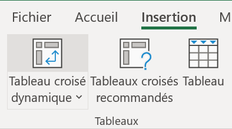
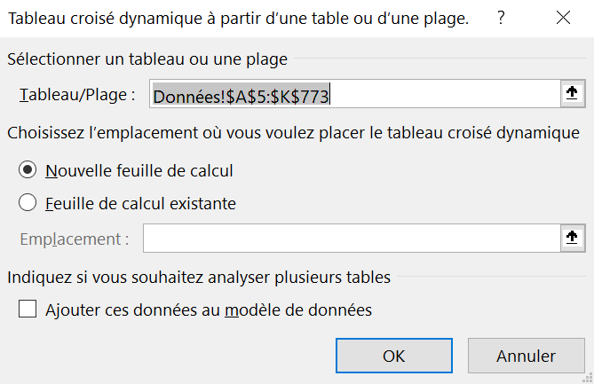

Ce laboratoire a pour objectif d’introduire le logiciel Excel.
Sous-section1.2.1Interface d’Excel
Avant de commencer à utiliser un nouveau logiciel, il est essentiel de se familiariser avec son interface et ses outils. Les fichiers d’Excel sont appelés des classeurs et chaque classeur contient des feuilles de calcul. La Figure 1.2.1 présente les noms des différents éléments d’une feuille d’Excel.
Figure1.2.1.Interface d’une fenêtre Excel
La barre Accès rapide est une barre personnalisable qui affiche les icônes des commandes les plus courantes. Par défaut, elle comprend les commandes suivantes : l’enregistrement de fichier, l’annulation d’une action effectuée et le rétablissement d’une action annulée.
Le nom du classeur est écrit dans la barre d’Accès rapide. Par défaut, Excel nomme le fichier Classeur 1. Les versions plus récentes d’Excel permettent de sauvegarder automatiquement le travail fait.
Le ruban est composé d’une barre de menus (Fichier, Accueil, Insertion, Mise en page, Formules, Données, Affichage, entre autres) et d’un groupe de commandes courantes dans chaque menu (outils courants regroupés par nature dans chaque onglet).
Une feuille de calcul est un quadrillage comportant des cases, appelées cellules, dans lesquelles on peut écrire du texte ou effectuer des calculs à l’aide de formules et de fonctions.
La cellule de référence C5 est la cellule située à l’intersection de la colonne C et de la ligne 5 . C5 est l’adresse de la cellule. Une cellule est dite active lorsqu’elle est sélectionnée. Dans ce cas, sa bordure est verte et épaisse. Les entêtes de sa colonne et de sa ligne sont alors grisés.
La plage de données F13:H18 correspond à l’ensemble des cellules contigües comprises entre les colonnes F et H et entre les lignes 13 et 18 .
La zone nom permet d’afficher la référence d’une cellule (la lettre de sa colonne et le numéro de sa ligne) ou le nom qui lui a été attribué. Cette zone permet également d’afficher le nom d’une plage de données.
La barre de formule permet d’afficher, d’entrer ou de modifier le contenu d’une cellule active. Le contenu peut être composé de texte, de nombres, de formules ou de fonctions.
Les onglets de feuilles représentent l’ensemble des feuilles de calcul qui composent le classeur. En cliquant droit sur l’onglet d’une feuille, un menu contextuel apparait. Il est possible, entre autres, de renommer la feuille, de la déplacer, de la copier, de la masquer ou de la supprimer.
En cliquant l’icône \(+ \) située à droite des onglets des feuilles, on peut ajouter une nouvelle feuille au classeur.
Les barres de défilement permettent de déplacer horizontalement et verticalement la feuille de calcul.
Sous-section1.2.2Exploration de l’élève
L’élève est invité à explorer les onglets du ruban et les groupes de commandes. Pour ce faire, il faut ouvrir le fichier Données_Diabète.xlsx.
Sous sous-section1.2.2.1Sélection d’une ligne ou d’une colonne
Dans une feuille de calcul, il est possible de sélectionner une ligne entière ou une colonne entière.
Placer le curseur sur le numéro de la ligne à sélectionner jusqu’à ce qu’une flèche noire apparaisse au-dessus du numéro de la ligne (voir la Figure 1.2.2).
Une fois que la flèche apparait, cliquer. La ligne entière sera sélectionnée. Elle sera grisée et entourée d’un cadre vert.
Figure1.2.2.Sélection d’une ligne
Pour la sélection d’une colonne entière, la procédure est similaire. Il faut placer le curseur sur la lettre de la colonne à sélectionner, attendre l’apparition de la flèche noire et cliquer.
Il ne faut pas oublier de sauvegarder régulièrement son travail en appuyant sur les touches CTRL-S ou en activant la sauvegarde automatique.
Sous sous-section1.2.2.2Modifier la largeur des colonnes ou des lignes
Dans une feuille de calcul, il est possible d’élargir ou de rétrécir la largeur d’une colonne ou d’une ligne.
Placer le curseur entre deux colonnes jusqu’à ce qu’une flèche bidirectionnelle apparaisse (voir la Figure 1.2.3).
Figure1.2.3.Modifier la largeur d’une colonne
Cliquer et déplacer la flèche vers la gauche pour rétrécir la largeur de la colonne de gauche et vers la droite pour élargir la largeur de la colonne de gauche. Pour modifier la largeur d’une ligne, il faut placer le curseur entre deux lignes et déplacer la flèche vers le haut ou le bas selon le résultat souhaité.
Il est possible d’ajuster la largeur d’une colonne ou d’une ligne au contenu de celle-ci. Il suffit de doublecliquer lorsque la flèche bidirectionnelle apparait.
Sous-section1.2.3Attribuer des noms
Dans cette section, les étapes pour nommer des cellules sont présentées. Attribuer un nom à une cellule signifie lui donner un identifiant autre que son adresse, afin de pouvoir y faire référence dans toutes les feuilles de calcul d’un classeur Excel.
Sous sous-section1.2.3.1Attribuer un nom à une cellule ou à une plage de cellules
La sélection de données est une opération courante dans Excel. En effet, que ce soit pour l’utilisation de formules ou la création de graphiques, il est souvent nécessaire de sélectionner des cellules. Cette tâche peut être laborieuse lorsque la base de données est volumineuse : on risque de glisser trop loin avec la souris, de devoir revenir en arrière, de ne pas sélectionner suffisamment de cellule et d’omettre des données, etc. Pour éviter ces problèmes, il est pratique d’attribuer un nom à une cellule ou à une plage de cellules. Cela permet de faire référence à ce nom dans une formule, peu importe la feuille de calcul dans laquelle on travaille.
Dans la feuille de calcul Données du fichier Excel, on attribue un nom au tableau principal, soit le nom « Échantillon ». Il existe deux façons d’effectuer cette opération.
Première méthode : zone nom.
Sélectionner l’entièreté du tableau, soit la plage A5:K773. Il est possible de faire ceci en sélectionnant la cellule A5 et en tapant la combinaison Ctrl+A.
Dans la zone nom (voir la figure Figure 1.2.1), taper le mot Échantillon (voir la Figure 1.2.4) et appuyer sur la touche Enter. Les noms ne doivent pas contenir d’espace ni de caractères spéciaux.
Figure1.2.4.Attribuer un nom à une plage de cellules à partir de la zone nom
La plage de données est désormais nommée Échantillon.
Remarque1.2.5.Nommer une plage de cellules.
Lorsque l’on attribue un nom à une plage de cellules avec la première méthode, il ne faut pas oublier d’appuyer sur la touche Enter pour s’assurer de l’enregistrement du nom.
Deuxième méthode: ruban.
Sélectionner l’entièreté du tableau, soit la plage A5:K773. Il est possible de faire ceci en sélectionnant la cellule A5 et en tapant la combinaison Ctrl+A.
Cliquer sur l’onglet Formules du ruban (voir la Figure 1.2.1).
Dans le groupe Noms définis, cliquer sur l’icône Définir un nom (voir la Figure 1.2.6). Une boite de dialogue apparait à l’écran.
Figure1.2.6.L’onglet Formules et le groupe Noms définis
Dans l’encadré vide de l’option Nom, taper le mot Échantillon, le nom attribué au tableau (voir la Figure 1.2.7). Les noms ne doivent pas contenir d’espace ni de caractères spéciaux.
Figure1.2.7.Attribuer un nom à une plage de cellules à partir de l’onglet Formules
S’assurer que, dans l’encadré de l’option Zone, il soit écrit Classeur. Ceci garantit que le nom attribué à une plage de cellules est défini dans toutes les feuilles du classeur. Cela permet aussi à l’utilisateur ou à l’utilisatrice d’y faire référence quelle que soit la feuille de travail.
Cliquer sur OK.
Sous sous-section1.2.3.2Vérification de l’attribution d’un nom
Il est important de vérifier que l’on a bien attribué un nom à une plage de cellules.
Dans la zone nom, cliquer sur la flèche du menu déroulant (voir la Figure 1.2.8).
Figure1.2.8.Vérification de l’attribution d’un nom à une plage de cellules Formules
Le nom Échantillon devrait apparaitre (voir la Figure 1.2.9). S’il n’apparait pas, l’attribution de nom n’a pas été bien saisie.
Figure1.2.9.Vérification de l’attribution d’un nom Échantillon au tableau principal
Sous sous-section1.2.3.3Attribuer un nom aux colonnes d’un tableau
Il est pratique d’attribuer un nom aux colonnes d’un tableau puisqu’il est possible de faire référence à celles-ci dans des formules Excel, et ce, peu importe la feuille de calcul dans laquelle on travaille.
Dans la zone nom, sélectionner Échantillon (voir la Figure 1.2.9).
Figure1.2.10.Sélection du tableau Échantillon
Cliquer sur l’onglet Formules du ruban.
Dans le groupe Noms définis, cliquer sur Depuis sélection (voir la Figure 1.2.11). Une boite de dialogue s’ouvre.
Figure1.2.11.L’onglet Formules et le groupe Noms définis
Cliquer sur l’option Ligne du haut (voir la Figure 1.2.12). Ceci permettra à Excel d’attribuer l’entête de la première ligne comme nom à la colonne.
Figure1.2.12.Sélection de l’option Lignes du haut dans le groupe Noms définis
Dans la zone nom, cliquer sur la flèche du menu déroulant pour vérifier qu’un nom a été attribué à chaque colonne (voir la figure Figure 1.2.13).
Figure1.2.13.Vérification de l’attribution du nom de chaque colonne
Sauvegarder le travail.
Sous-section1.2.4Figer et libérer les volets
Lorsqu’on souhaite parcourir un tableau de grande taille (beaucoup de lignes ou de colonnes), il est pratique de maintenir les titres des colonnes ou des lignes visibles pendant le défilement de la feuille de calcul.
Sous sous-section1.2.4.1Figer la ligne de titres d’un tableau
Sélectionner la deuxième ligne du tableau, soit la ligne 6 (voir la Figure 1.2.14). Il faut placer son curseur à la ligne 6 et cliquer.
Figure1.2.14.Sélection de la deuxième ligne du tableau Échantillon
Sélectionner l’onglet Affichage. Dans le groupe Fenêtre, cliquer sur la flèche du menu déroulant de l’icône Figer les volets (voir la Figure 1.2.15).
Figure1.2.15.Sélection de l’onglet Affichage et de l’icône Figer les volets
Figure1.2.16.Sélection de l’option Figer les volets
Maintenant, lorsque l’on fait défiler le tableau, les titres des colonnes restent visibles. Il est possible de verrouiller à la fois des lignes et des colonnes, ainsi que de libérer les volets, si nécessaire.
Sous sous-section1.2.4.2Libérer les volets
Si l’on veut libérer les volets, on peut les supprimer.
Sélectionner l’onglet Affichage (voir la figure Figure 1.2.15).
Dans le groupe Fenêtre, cliquer sur la flèche du menu déroulant de l’icône Figer les volets (voir la Figure 1.2.17). Cliquer sur l’option Libérer les volets.
Figure1.2.17.Sélection de l’option Libérer les volets
Sous-section1.2.5Filtrer et trier des données
Dans Excel, il est possible d’ajouter des filtres permettant de dépister des valeurs aberrantes ou manquantes, ainsi que de choisir ou masquer certaines modalités. Il est également possible de trier des séries statistiques dans un certain ordre voulu.
Sous sous-section1.2.5.1Ajouter des filtres
Les étapes qui mènent au filtrage de données sont présentées.
Sélectionner le tableau Échantillon.
Sélectionner l’onglet Données (voir la Figure 1.2.18). Cliquer sur l’icône Filtrer du groupe Trier et filtrer.
Figure1.2.18.Sélection de l’icône Filtrer
Chaque variable affiche désormais un petit triangle dans une boite grise à droite de son nom (voir la Figure 1.2.19).
Figure1.2.19.Triangle affichant toutes les modalités d’une variable qualitative et toutes les valeurs d’une variable quantitative
En cliquant sur ce triangle, toutes les modalités d’une variable qualitative et toutes les valeurs d’une variable quantitative sont affichées (voir la Figure 1.2.20). Il est possible de décocher certaines catégories pour les masquer et n’afficher que celles souhaitées.
Figure1.2.20.Toutes les valeurs de la variable Âge
Sous sous-section1.2.5.2Trier à partir des filtres
Il existe deux façons de trier les données d’un tableau. La première se fait en utilisant des filtres.
En cliquant sur le petit triangle de filtre de la variable Âge, une boite de dialogue s’ouvre. La première option permet de trier les valeurs par ordre croissant (plus petit au plus grand, A à Z pour les variables qualitatives), tandis que la deuxième option permet de trier les valeurs par ordre décroissant (du plus grand au plus petit, Z à A pour les variables qualitatives) (voir la Figure 1.2.21).
Figure1.2.21.Options de tris
Sous sous-section1.2.5.3Trier à partir de l’onglet Données
La deuxième façon de trier des données passe par l’onglet Données.
Cliquer sur l’onglet Données. Cliquer l’icône Trier (voir la Figure 1.2.22).
Figure1.2.22.Options de tris
Une boite de dialogue s’ouvre.
Il est possible de sélectionner la variable à trier et d’appliquer un tri croissant, un tri décroissant ou un tri personnalisé (voir la Figure 1.2.23).
Figure1.2.23.Boite de dialogue pour le tri et options de variables à trier
Sauvegarder.
Sous-section1.2.6Ajouter et nommer une feuille de calcul
Lorsqu’on réalise plusieurs études à partir d’une même base de données, il est préférable de travailler dans un seul classeur et d’effectuer chaque étude dans une feuille de calcul distincte afin de faciliter la consultation.
Cliquer sur le symbole \(+ \) (voir la Figure 1.2.24).
Figure1.2.24.Ajouter une nouvelle feuille de calcul
Une feuille intitulée Feuil1 s’ouvrira.
Figure1.2.25.Une nouvelle feuille de calcul intitulée Feuil1
Déplacer la feuille en dernière place, après les feuilles Questions et Données, si Excel ne le fait pas par défaut.
Cliquer droit sur le nom de la feuille.
Sélectionner l’icône Renommer et taper les mots Étude Atteint.
Figure1.2.27.Sélection de l’icône Renommer
Sous-section1.2.7Remplissage automatique
Sous sous-section1.2.7.1Remplissage automatique d’une valeur
Il est possible de remplir une colonne avec la même valeur en utilisant la fonction de recopiage automatique d’Excel. Par exemple, dans un problème de physique ou de chimie, il se peut que l’incertitude soit la même pour toutes les mesures et l’on aimerait la recopier sans taper manuellement la valeur plusieurs fois. Les étapes pour faire un remplissage automatique sont présentées ci-dessous.
Dans le classeur de travail, ajouter une feuille de travail (Figure 1.2.24).
Dans la cellule C5 de cette nouvelle feuille, taper la valeur \(1\) (Figure 1.2.28).
Figure1.2.28.Remplissage automatique d’une valeur à recopier
Sélectionner la cellule jusqu’à ce qu’elle soit encadrée d’une bordure verte (Figure 1.2.28).
Cliquer et maintenir enfoncé le bouton gauche de la souris sur le coin inférieur droit de la cellule (un petit carré vert). Glisser le pointeur vers le bas jusqu’à la cellule voulue, la cellule C17 dans ce cas (Figure 1.2.28).
Relâcher le bouton gauche de la souris. La valeur \(1\) apparait dans toutes les cases sélectionnées, soit la plage C5:C17 (Figure 1.2.28). Le remplissage peut également être fait le long d’une ligne.
Sous sous-section1.2.7.2Remplissage automatique d’une suite de nombre
Dans les cellules E5:E7 de la même feuille de calcul, taper les valeurs \(1\text{,}\)\(2\) et \(3\) respectivement (Figure 1.2.29).
Figure1.2.29.Remplissage automatique d’une suite de nombres
Sélectionner les cellules E5:E7 jusqu’à ce qu’elles soient encadrées d’une bordure verte (Figure 1.2.29).
Cliquer et maintenir enfoncé le bouton gauche de la souris sur le coin inférieur droit de la plage de cellules (un petit carré vert). Glisser le pointeur vers le bas jusqu’à la cellule voulue, la cellule E17 dans ce cas (Figure 1.2.29). Relâcher le bouton gauche de la souris une fois la cellule voulue atteinte.
En sélectionnant trois cellules qui ont trois nombres consécutifs, Excel comprend qu’en effectuant un remplissage automatique, on veut poursuivre la séquence et non recopier ces trois valeurs. Ainsi, il remplit les cellules avec les nombres \(4\) à \(13\) (Figure 1.2.29).
Sous sous-section1.2.7.3Remplissage automatique d’une valeur en doublecliquant
Dans les cellules F5:F6 de la même feuille de calcul, taper la valeur \(2\) (Figure 1.2.30). On place ces valeurs dans la colonne adjacente à celles déjà remplies avec les valeurs \(1\) à \(13\text{.}\)
Figure1.2.30.Remplissage automatique d’une valeur ou d’une formule avec le doubleclique
Sélectionner les cellules F5:F6 jusqu’à ce qu’elles soient encadrées d’une bordure verte (Figure 1.2.30).
Doublecliquer le bouton gauche de la souris sur le coin inférieur droit de la plage de cellules (un petit carré vert) (voir la Figure 1.2.30). La plage F5:F17 se remplit automatiquement. Le remplissage arrête à la ligne \(17\text{,}\) car Excel remplit jusqu’à la même ligne que la colonne adjacente à la colonne F.
Sous-section1.2.8Tableau croisé dynamique
Lorsque l’on dispose d’une vaste base de données, il peut être difficile de mettre en évidence les faits saillants. Excel permet de créer des tableaux croisés dynamiques pour organiser, présenter, synthétiser et analyser des données. Pour ce faire, il est crucial que les données de chaque variable soient initialement organisées en colonnes dans un seul tableau maitre. Le mot « croisé » fait référence à la possibilité de regrouper et de comparer plusieurs variables, tandis que le mot « dynamique » souligne la capacité du tableau à évoluer. En effet, si une valeur est modifiée dans la base de données, le tableau croisé dynamique peut être mis à jour. À partir d’un tableau croisé dynamique, il est possible de générer un tableau de fréquences pour visualiser la répartition des unités statistiques en fonction d’une variable.
La première enquête du laboratoire 2 porte sur la répartition des femmes d’origine pima de l’Arizona selon la présence de diabète. Ainsi, on génère un tableau croisé dynamique de cette distribution. Il existe deux méthodes pour le générer.
Sous sous-section1.2.8.1Générer un tableau croisé dynamique (variables qualitatives)
Première méthode.
Dans la feuille Étude Atteint, sélectionner la cellule B3, la cellule dans laquelle le tableau croisé dynamique sera inséré.
Cliquer sur l’onglet Insertion du ruban (voir la Figure 1.2.31).

Figure1.2.31.Sélection de l’onglet Insertion
Cliquer la première icône, soit Tableau croisé dynamique (voir la Figure 1.2.31).
Une boite de dialogue apparait à l’écran.
Dans la zone de saisie Tableau/Plage, écrire le nom donné au tableau principal, soit Échantillon (voir la Figure 1.2.32)
Figure1.2.32.Boite de dialogue pour l’insertion d’un tableau croisé dynamique et saisie du nom donné au tableau principal, soit Échantillon
Cliquer sur OK.
Un tableau croisé dynamique vide sera déposé dans la feuille Étude Atteint (voir Figure 1.2.33).
Figure1.2.33.Tableau croisé dynamique généré
Deuxième méthode.
Dans la feuille Données, sélectionner l’entièreté du tableau, soit la plage A5:K773. Il est possible de faire ceci en sélectionnant une cellule non vide du tableau Échantillon et en tapant la combinaison Ctrl+A.
Cliquer sur l’onglet Insertion du ruban (voir la Figure 1.2.31).
Figure1.2.34.Sélection de l’onglet Insertion
Cliquer sur la première icône, soit Tableau croisé dynamique (voir la Figure 1.2.31).
Une boite de dialogue s’ouvre. La plage de données à partir de laquelle on veut créer un tableau croisé dynamique est bien sélectionnée.
Cliquer sur l’option Feuille de calcul existante pour déterminer l’emplacement du tableau croisé dynamique (voir la Figure 1.2.35)

Figure1.2.35.Sélection de la plage de données à partir de laquelle un tableau croisé dynamique sera généré et sélection de l’option Feuille de calcul existante et de la flèche pour l’emplacement du tableau croisé dynamique
Cliquer sur l’onglet de la feuille de calcul Étude Atteint.
Une fois dans la feuille Étude Atteint, cliquer sur la cellule B3 de la feuille.
Figure1.2.36.Confirmation de l’emplacement du tableau croisé dynamique
Un tableau croisé dynamique vide sera déposé dans la feuille Étude Atteint (voir Figure 1.2.33).
Figure1.2.37.Tableau croisé dynamique généré
Une fois le tableau croisé dynamique généré, il faut le configurer. À la droite de la feuille de calcul, les champs du tableau croisé dynamique s’affichent. Les champs correspondent aux entêtes des colonnes du tableau source. On trouve cinq encadrés : le premier contient les champs. Les encadrés Colonnes, Lignes et Valeurs représentent des zones où l’on peut ajouter des champs. L’encadré Valeurs permet d’effectuer des calculs au sein du tableau croisé dynamique, tandis que l’encadré Filtres sert à appliquer des filtres aux données lors de la création du tableau.
Sous sous-section1.2.8.2Remplir un tableau croisé dynamique
Avec 768 femmes étudiées, il est évident qu’un décompte manuel des femmes diabétiques est à la fois long, laborieux et sujet à de nombreuses erreurs. Les étapes pour créer le tableau croisé dynamique de la répartition des femmes pima selon la présence de diabète sont présentées ci-dessous.
Glisser et déposer la variable Atteint dans la zone de saisie Lignes (voir la Figure 1.2.38). Pour ce faire, il faut cliquer sur la variable Atteint avec le bouton de gauche de la souris, garder son doigt enfoncé et glisser la variable dans la zone Lignes.
Figure1.2.38.Glissement de la variable Atteint dans la zone de saisie Lignes
Les modalités de la variable Atteint s’affichent dans la première colonne du tableau croisé dynamique (voir la Figure 1.2.39).
Figure1.2.39.Première colonne du tableau croisé dynamique
Glisser et déposer la variable Atteint dans la zone de saisie Valeurs cette fois-ci (voir la Figure 1.2.40).
Par défaut, Excel effectue la somme des valeurs comme opération. Cependant, on veut compter le nombre de femmes dans chaque catégorie. Dans la zone de saisie Valeurs, cliquer sur la flèche du menu déroulant, puis sélectionner l’option Paramètres des champs de valeurs (voir la Figure 1.2.40) pour modifier le calcul.
Figure1.2.40.Glissement de la variable Atteint dans la zone de saisie Valeurs
Une nouvelle boite de dialogue apparait.
À l’onglet Synthèse des valeurs par, sélectionner l’option Nombre (voir la Figure 1.2.41).
Figure1.2.41.Sélection de l’option Nombre dans l’onglet Synthèse des valeurs par
Cliquer sur OK.
Cette action ajoute une deuxième colonne au tableau croisé dynamique, une colonne qui compte le nombre de femmes d’origine pima dans chaque catégorie de la variable Atteint (voir la Figure 1.2.42).
Figure1.2.42.Deuxième colonne du tableau croisé dynamique
Refaire les étapes 2 à 4 pour ajouter une troisième colonne au tableau croisé dynamique. On veut ajouter une colonne pour le pourcentage de femmes d’origine pima atteintes ou non du diabète.
À l’onglet Synthèse des valeurs par, sélectionner l’option Nombre (voir la Figure 1.2.41). Attention, il ne faut pas cliquer sur OK tout de suite!
Cliquer sur l’onglet Afficher les valeurs, l’onglet à droite de Synthèse des valeurs par.
Cliquer sur la flèche du menu déroulant et sélectionner l’option % du total général (voir la figure Figure 1.2.43)
Figure1.2.43.Sélection de l’onglet Afficher les valeurs et de l’option % du total général
Cliquer sur OK. La troisième colonne présente le pourcentage de femmes d’origine pima atteintes ou non du diabète.
Figure1.2.44.Les trois colonnes du tableau croisé dynamique final
Sauvegarder le travail.
Sous sous-section1.2.8.3Actualiser un tableau croisé dynamique
Si une valeur du tableau principal est modifiée, il est possible d’actualiser le tableau croisé dynamique pour refléter les changements effectués.
Cliquer avec le bouton de droite de la souris sur une des colonnes du tableau croisé dynamique. Un menu déroulant s’affiche. Cliquer l’option Actualiser.
Figure1.2.45.Sélection de l’option Actualiser d’un tableau croisé dynamique
Sauvegarder le travail.
Dans le prochain laboratoire seront abordées les étapes pour améliorer la présentation de ce tableau afin qu’il soit conforme aux normes statistiques .